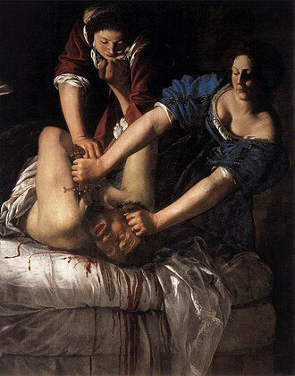
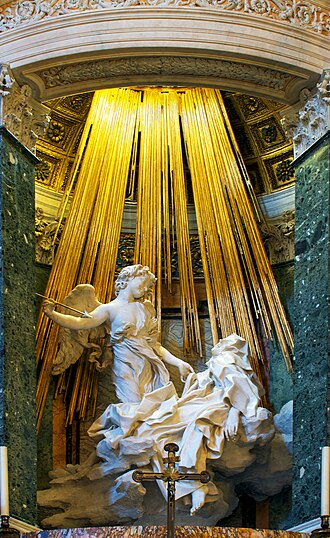
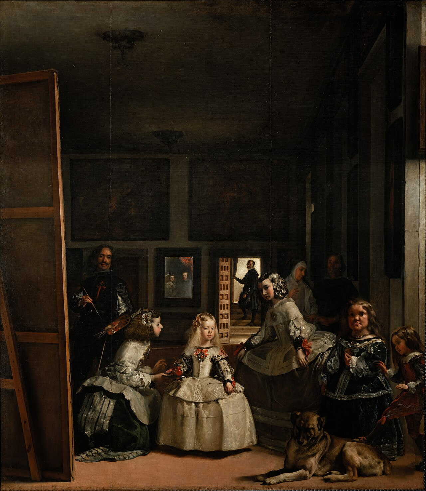
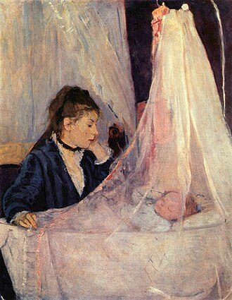
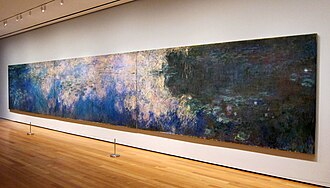

Route A · classic Western sequence
Foundations → Renaissance → Baroque → 18th/19th centuries → Impressionism → Modernism → Contemporary.
A practical visual guide
This guide gives you a usable map of art history: the main periods, the artists that define them, and the visual patterns that make each one easier to recognise and remember.
Art history can be organised in different ways, and many traditions develop alongside one another.
Use the overview cards to move quickly between periods, artists, and visual ideas.
The aim is to help you spot patterns in style, subject, and technique.
Mental map
Art history is easier to learn when you treat it as a set of routes, not a single fixed timeline. You can follow the familiar Western sequence, widen the frame through parallel traditions, or begin with artists you already care about and work outward from them.
Foundations → Renaissance → Baroque → 18th/19th centuries → Impressionism → Modernism → Contemporary.
Medieval Europe happens alongside Byzantine, Persian, Mughal, Chinese, Japanese, and other visual traditions.
Caravaggio / Rembrandt → Baroque page · Picasso → Modernism page · Monet / Van Gogh → Impressionism to modern break page.
Eight chapters
Use the full chapter grid for the whole map, or jump to the starting points below if you want a quicker route in.
Ancient, classical, Byzantine, and early medieval art
6 visual anchorsc. 1000 → 1800, with later echoesArt history is not only one European baton-pass
5 visual anchorsc. 1300 → 1600Perspective, humanism, anatomy, order, and revived classicism
5 visual anchorsc. 1600 → 1700Light, drama, spectacle, intimacy, and civic life
6 visual anchorsc. 1700 → 1875Rococo, Neoclassicism, Romanticism, and Realism overlap rather than lining up neatly
7 visual anchorsc. 1860 → 1907Light loosens, brushwork shows, structure shifts, and painting starts to stop behaving like a window
7 visual anchorsc. 1907 → 1970Fragmentation, abstraction, the conceptual turn, and the expansion of what counts as art
6 visual anchorsc. 1970 → nowInstallation, identity, memory, institutions, media, and global circulation
3 visual anchorsGood places to start
If you are not sure where to begin, use one of these routes. Each one gives you a clear way into the wider story.
If you want the backbone
Begin with ancient, classical, Byzantine, and medieval art to see the visual languages that later periods inherit, revive, and challenge.
Open Foundations


If you like drama and portraiture
Caravaggio, Artemisia, Bernini, Rembrandt, Velázquez, and Vermeer make a strong route into light, theatre, intimacy, and civic life.
Open Baroque and Dutch Golden Age


If you want the road to Picasso
Follow Monet, Degas, Cézanne, and Van Gogh to see how painting loosens, modern life enters the frame, and form starts to fracture.
Open Impressionism to the modern break


If you want a wider canon
Use this chapter to widen the frame beyond a single European sequence and see how major traditions develop in dialogue and in parallel.
Open Parallel worlds